方案 C · 🥈 聰明的選擇
城市×南洋文化×街頭美食×老城×建築×超高CP值——「奇怪，怎麼沒有花很多錢但一直在吃東西」的一組。
2026.12.25 → 2027.01.03 · 9 晚 10 天
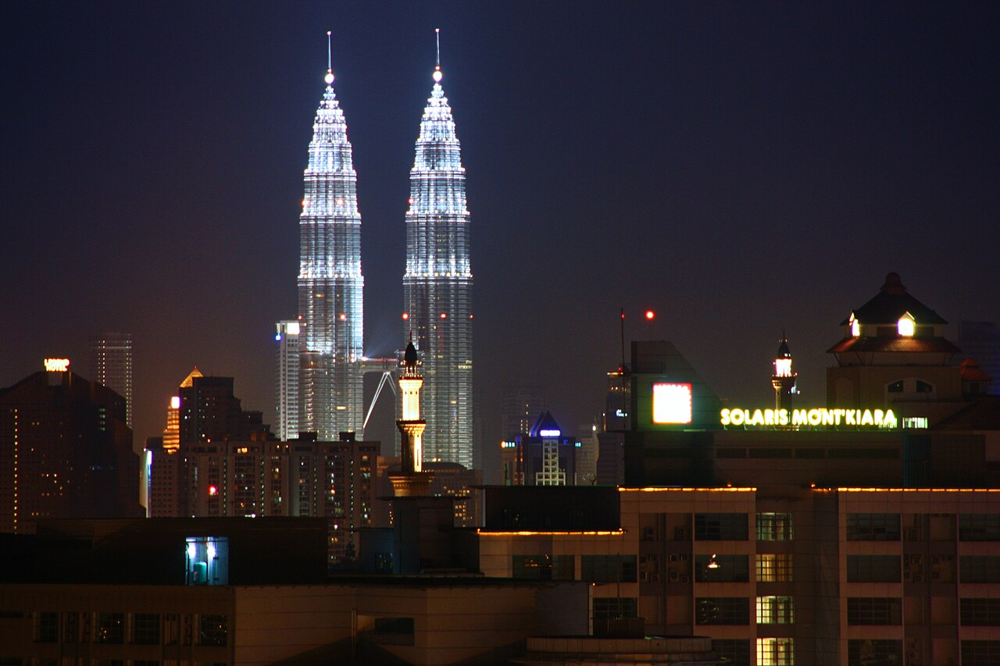
如果把預算、美食、跨年、行程舒適度一起考慮，這是非常強的一組。檳城 George Town 本身就是 UNESCO 世界遺產城市——它不是「很多景點買票」，而是整座城市本身就是景點，非常適合走路亂晃。Pavilion、TRX、KLCC 的聖誕裝飾通常還會留著，雖然聖誕節已經結束，還是吃得到最後一口聖誕蛋糕 🎄。
吉隆坡最熱鬧的商圈，Pavilion、TRX、KLCC 的聖誕裝飾雖然節日已過，通常還會留著沒拆，還吃得到最後一口「聖誕餘溫」。晚餐直接走去 Jalan Alor 宵夜街。
🍴 必吃：Jalan Alor 大排檔（沙嗲、炒粿條、海鮮）
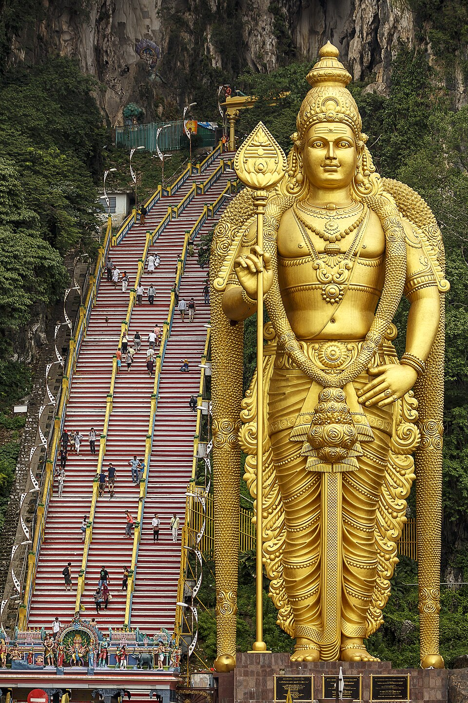
吉隆坡近郊的印度教石灰岩洞穴聖地，洞口矗立一尊高42.7公尺的黃金戰神姆魯干（Murugan）雕像，是全球最高的姆魯干神像。要爬272級色彩繽紛的階梯才能抵達主洞穴，建議上午早點去，比較涼爽也比較不擠。
👀 必看：42.7公尺金色姆魯干神像、272級彩虹階梯、洞穴內的印度教神廟
⚠️ 提醒：猴子很多，食物與塑膠袋要收好
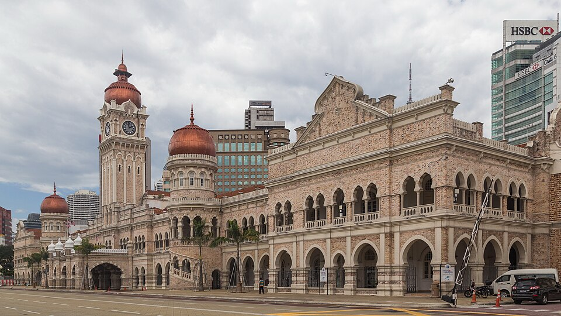
馬來西亞宣布獨立的地點，廣場周邊環繞英殖民時期的都鐸式建築群，蘇丹阿都沙末大廈的摩爾式鐘樓是吉隆坡最重要的歷史地標。
👀 必看：蘇丹阿都沙末大廈鐘樓、Central Market 中央市場手工藝品
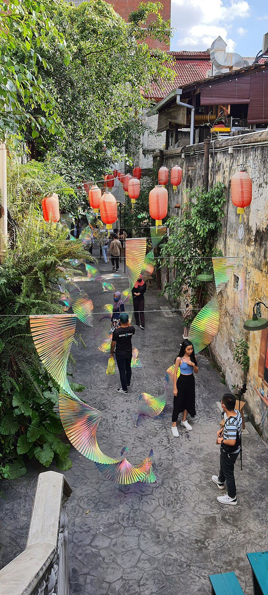
傳統中國城市集與近年整修的懷舊壁畫巷弄「鬼仔巷」比鄰而居，白天逛老字號金飾南北貨，晚上壁畫燈光亮起別有氣氛。
🍴 必吃：金蓮記福建麵、陳氏書院附近的老字號肉骨茶
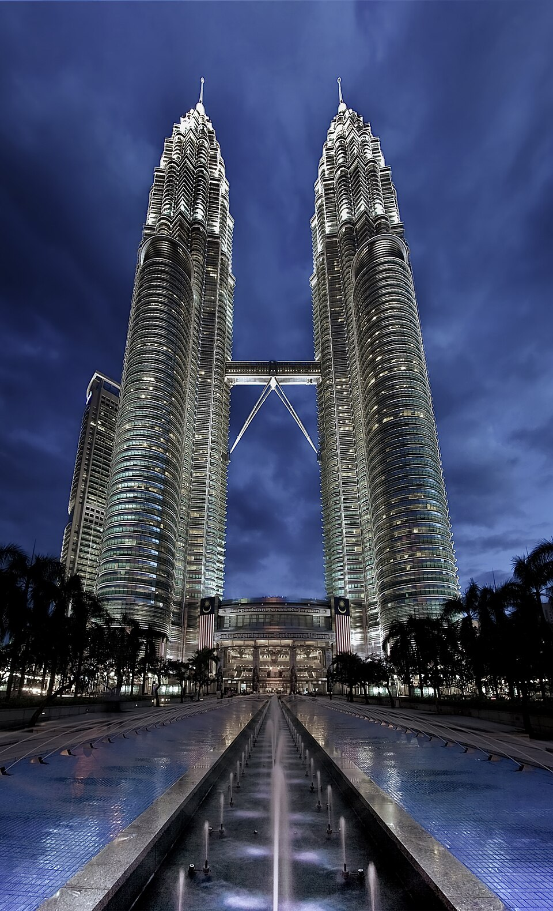
88層樓的鋼鐵與玻璃雙塔，曾是全球最高建築，塔間的天橋是最經典的拍照點。KLCC Park 綠地上能拍到雙塔全景倒映在噴水池裡，日落後燈光亮起是最佳觀賞時刻。
👀 必看：雙子塔連接天橋、KLCC Park 噴水池倒影、夜間燈光秀
KL Sentral → Butterworth，再搭渡輪進 George Town。不用提早兩小時到機場，市中心到市中心，行李也輕鬆。
這一天很適合完全不排時間表，看到好吃的就進去。
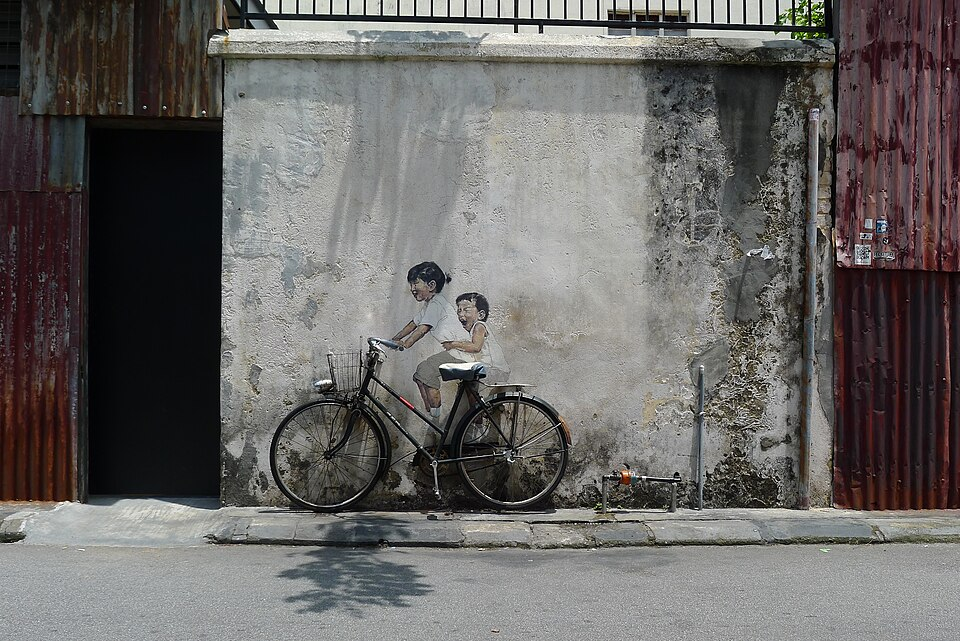
2012年立陶宛藝術家 Ernest Zacharevic 在老城巷弄畫下第一批壁畫後，George Town 逐漸變成東南亞最知名的街頭藝術之城——真人互動式壁畫、鐵線裝置藝術散落在整片喬治市世界遺產區。
👀 必看：Armenian Street「騎腳踏車的小孩」壁畫、Kapitan Keling Mosque 印度風清真寺
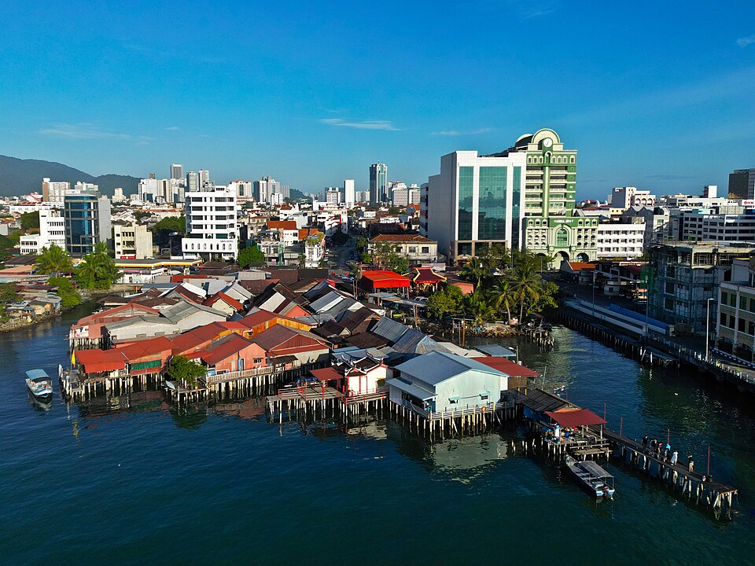
19世紀華人移民在海上搭建的高腳木屋聚落，依姓氏分成不同的橋（Lim Jetty 林橋、Chew Jetty 周橋等），至今仍有居民生活其中，是聯合國教科文組織認可的活態文化遺產，背後就是喬治市天際線。
👀 必看：周橋（Chew Jetty，規模最大、遊客最常去）、日落時分的海上木屋剪影
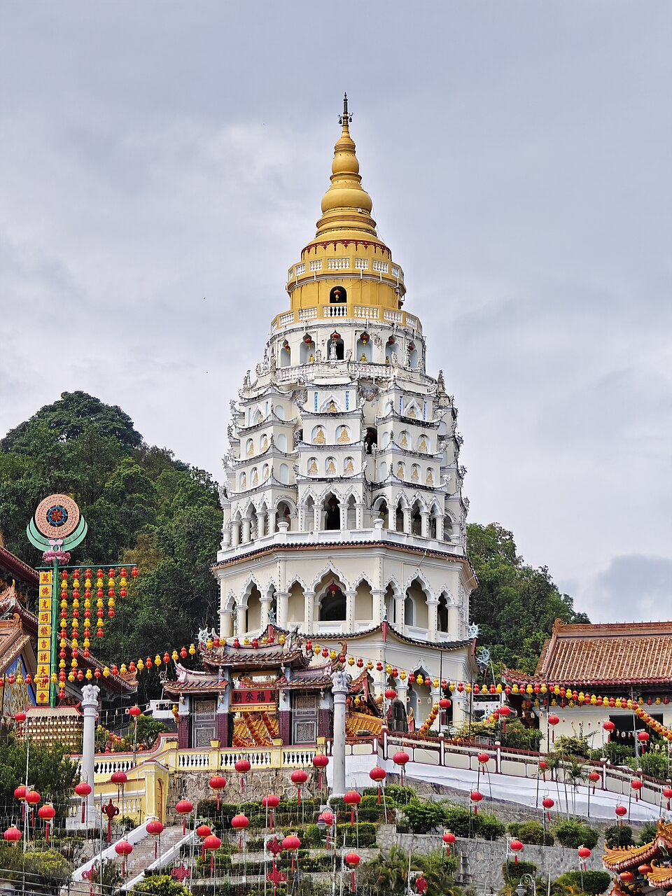
東南亞最大佛寺之一，七層樓高的萬佛塔融合中國、泰國、緬甸三種建築風格，山頂矗立一尊巨型觀音像，纜車可直達山頂，寺內萬佛塔內供奉上萬尊佛像。
👀 必看：七層萬佛塔、巨型觀音像、山頂俯瞰喬治市
不想跑山，可改成 George Town 咖啡店＋老建築慢旅行。
推薦住 Bukit Bintang——跨年後直接走回飯店，不用跟幾十萬人一起搶 Grab。
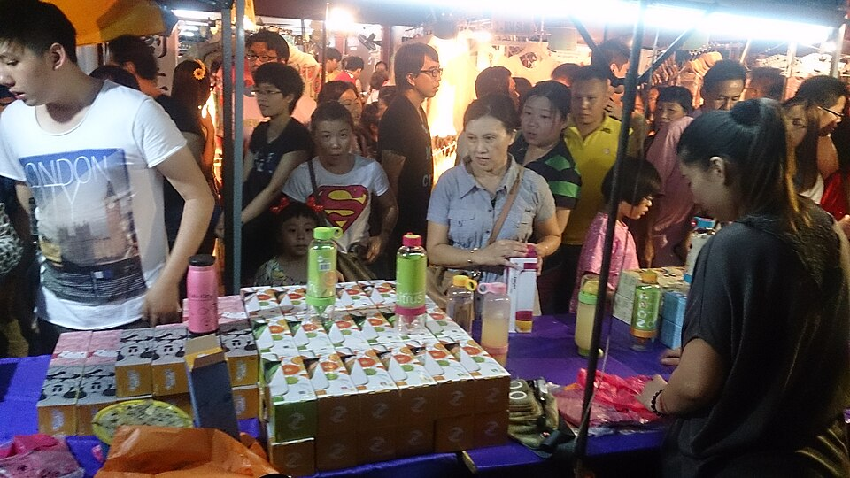
馬來西亞最早的貿易港口城市，葡萄牙、荷蘭、英國殖民歷史層層疊加，荷蘭紅屋廣場、Jonker Street 週末夜市、河岸壁畫船屋交織出獨特的混血城市風貌，是 UNESCO 世界遺產城市。
👀 必看：荷蘭廣場紅屋、Jonker Street 老街、河岸夜景
🍴 必吃：娘惹菜（Nyonya）、雞場街肉骨茶
如果想輕鬆：Putrajaya——粉紅清真寺、湖景、現代伊斯蘭城市規劃
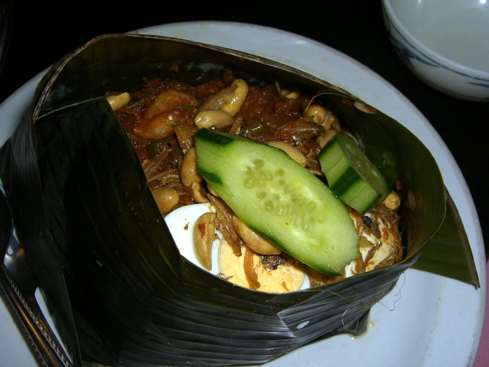
馬來西亞國民早餐／全天候料理，椰漿蒸煮的香米配參巴辣醬、炸江魚仔、花生、小黃瓜與水煮蛋，用香蘭葉包裝是傳統吃法，簡單卻是最能代表馬來西亞的一道菜。
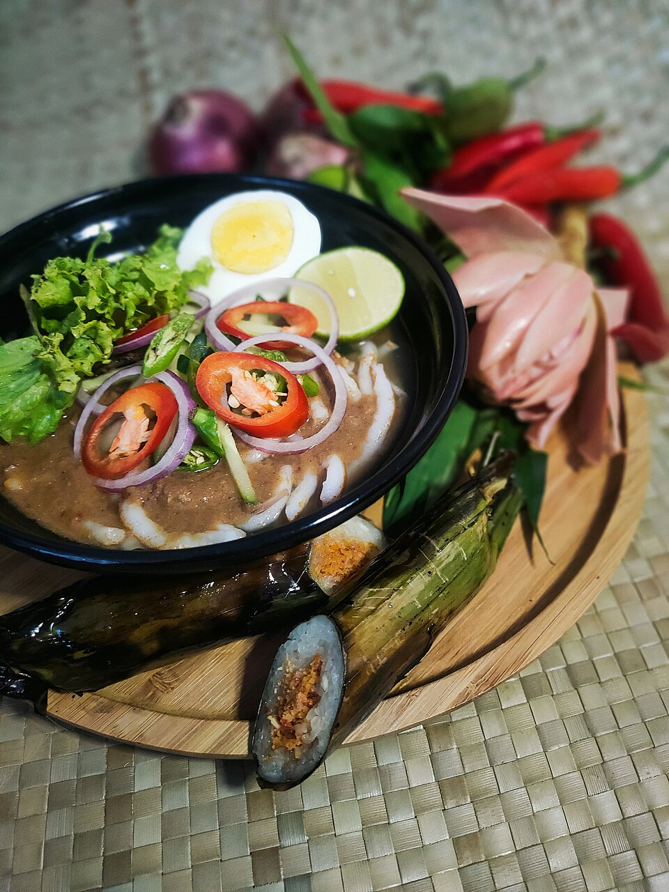
檳城代表性酸辣魚湯麵，用羅望子（亞參）熬出酸香湯底，配薄荷葉、洋蔥絲、鳳梨片與蝦膏醬，酸中帶辣、層次複雜，是檳城美食必吃清單第一名。
| 項目 | 預估 |
|---|---|
| 台北－KL 來回 | NT$9,000～14,000 |
| KL－Penang 往返（ETS＋渡輪） | NT$1,000～2,000 |
| 9晚住宿 | NT$6,000～10,000 |
| 餐飲 | NT$3,500～6,000 |
| Grab／MRT | NT$1,500～2,500 |
| 景點 | NT$1,500～3,000 |
| 總計 | 約 NT$25,000～39,000 |
認真省：NT$25,000～29,000 正常舒服：NT$30,000～35,000 住好一點：NT$35,000～39,000